Today’s box tractor next to three directions with a hint of realism. Every drawing is an orthographic, flat-shaded projection of the same low-poly part list the three.js scene would build, so proportions, light from the top left and triangle counts carry straight over.
Side by side
Same scale in every column. The top view points the nose up and marks the hitch point for the Live feed implement bar.
Current
A · Modern cab
B · Autonomous orchard
C · Compact utility
3/4 view
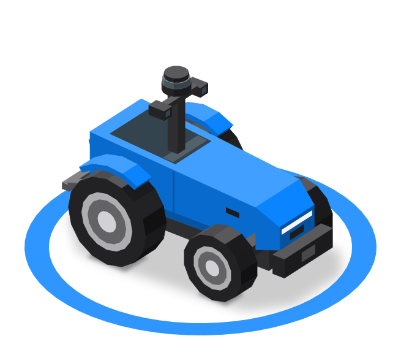
Side
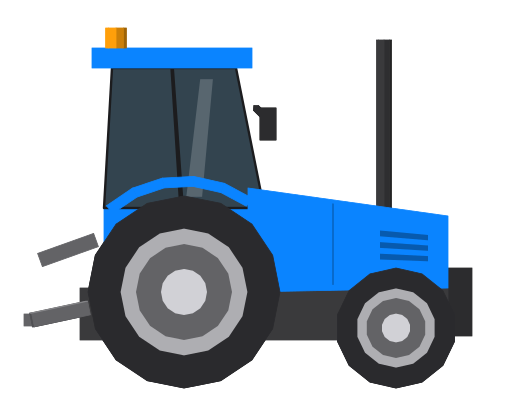
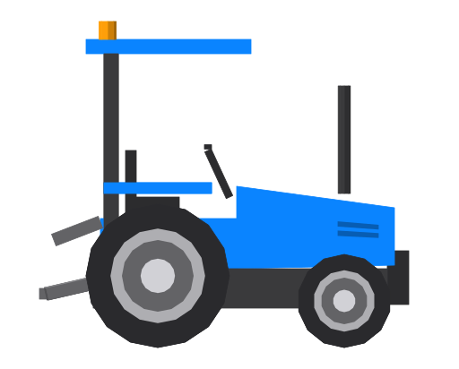
Top · Live feed
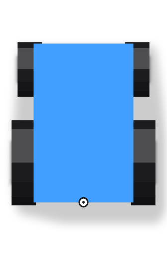
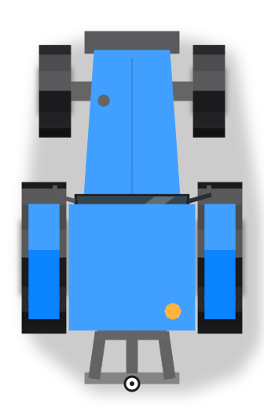
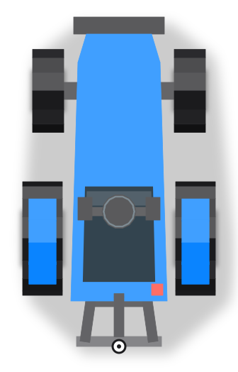
At scene size
Tractor about 48 px tall, the size the orbit camera shows it. Current, A, B and C, then each direction’s fleet sheet at the same scale.
CurrentABC
CurrentABC
Fleet colours and states
T1 to T8, then T1 broken (pulsing red ring, smoke) and T3 working with a sprayer on the hitch. Colour sits only on body panels; tyres, glass and chassis stay neutral.
A · Modern cab tractorB · Autonomous orchard tractor
C · Compact utility
Directions
What changes, why, and how each one maps to three.js r128 geometry.
A · Modern cab tractor
What changes
Tapered hood with grille, headlights and side vents. Raked glass cab with dark pillars and one highlight. Fleet-coloured roof, hood and fenders over 16-sided treaded rear tyres with grey rims. Exhaust stack, amber beacon, front ballast, three-point hitch.
Why
Keeps today’s silhouette, with the cab at the back and the roof in fleet colour, so the scene reads the same and only gets more believable. The roof and hood stay the largest colour areas from the tilted camera, so all eight colours hold at 48 px.
Three.js parts
Chassis, axle, ballast: Box. Hood: Box with the four front vertices moved in and down (taper). Cab base, roof: Box. Cab: Box with the top-front edge pulled back (raked glass), dark Phong with low shininess. Fenders: 5 thin lofted boxes per side, or one ExtrudeGeometry arc. Wheels: Cylinder 16 / 14 with every other side face darker for tread, plus a 3-ring CircleGeometry rim. Exhaust, beacon: Cylinder 8. Mirrors, hitch links: thin Box.
Budget
31 meshes and 580 triangles of solid geometry. Add 23 panel decals (grille, lights, vents, glass highlights; 46 triangles as vertex-coloured quads) and the grey rim and hub discs (180 triangles, three CircleGeometry rings per outer wheel face) for 806 triangles as drawn. Estimated LOD for 50+: 508 (not rendered here).
B · Autonomous orchard tractor
What changes
Low, cab-less, electric. One long body that rises toward the back, with a chamfered nose and full-width LED bar, a glass sensor deck, and a mast carrying a camera bar and a LiDAR puck. Low fenders, red e-stop, tail lights, hitch.
Why
Tells the autonomy story at a glance, and the mast gives a distinct silhouette even top-down. Trade-offs: there is no exhaust, so the breakdown smoke rises from the deck, “fuel %” would read better as “energy %”, and less fleet colour shows from above because of the glass deck.
Three.js parts
Body and nose: two lofted Boxes. Deck glass, LED bar, e-stop: vertex-coloured quads. Mast, camera bar, camera pods: Box. LiDAR: three stacked Cylinder 14 (base, lit window, cap). Fenders: 4 lofted boxes per side. Wheels as in A.
Budget
29 meshes and 644 triangles of solid geometry. Add 15 panel decals (grille, lights, vents, glass highlights; 30 triangles as vertex-coloured quads) and the grey rim and hub discs (180 triangles, three CircleGeometry rings per outer wheel face) for 854 triangles as drawn. Estimated LOD for 50+: 596 (not rendered here).
C · Compact utility
What changes
Short hood, open operator station with seat and steering wheel, a two-post roll frame under a fleet-coloured canopy, flat fenders.
Why
Sits between A and B: lighter and more “farm utility”. The open frame looks busy below about 60 px, and the canopy floating on thin posts reads less solidly than A’s cab.
24 meshes and 496 triangles of solid geometry. Add 9 panel decals (grille, lights, vents, glass highlights; 18 triangles as vertex-coloured quads) and the grey rim and hub discs (180 triangles, three CircleGeometry rings per outer wheel face) for 694 triangles as drawn. Estimated LOD for 50+: 472 (not rendered here).
Triangle budget
Tractor
Meshes
Solid
Panel decals
Rim discs
As drawn
LOD est.
Fleet of 5
Current
7
244
+0
+0
244
148
1220
A · Modern cab
31
580
+46
+180
806
508
4030
B · Autonomous
29
644
+30
+180
854
596
4270
C · Compact
24
496
+18
+180
694
472
3470
The status ring is not counted (RingGeometry, 80 triangles). As drawn, all three directions exceed 600 triangles per tractor; only C comes close. Read literally, “under 600 for five tractors” means about 120 per tractor, which even today’s 244-triangle tractor misses. The table therefore reports per-tractor counts, and the target needs a decision. The LOD estimate uses 10 / 8-sided wheels, one rim disc plus a hub disc, 3 fender segments and no panel decals; it lands near 500 to 600. A trims further with 12 / 10-sided wheels and an 8-sided beacon. For 50+ tractors, merge each design into two geometries: fleet-coloured panels (an InstancedMesh with instanceColor) and neutral parts with vertex colours (a second InstancedMesh). Add a third only if the wheels need to spin. That is two or three draw calls for the whole fleet. Footprint: A is about 1.1 long including the hitch (0.98 without), against today’s 0.8, so the ballast and hitch reach the ring’s inner edge; check lane spacing. New designs use a thinner ring (0.62 to 0.72) than today’s (0.62 to 0.76), which flatters them slightly at 48 px.
Recommendation
Go with A, the modern cab tractor. It keeps the silhouette people already know from the scene, puts the most fleet colour where the tilted camera looks (roof, hood, fenders), and stays readable in all eight colours at 48 px. Its exhaust stack gives the breakdown smoke a natural source, and it fits the fuel and mechanic story.
If the pitch leans into autonomy, B’s mast and LiDAR puck can bolt onto A’s roof as an optional “autonomy kit” (about 200 extra triangles) without changing the base model.
House: the depot
Step 1, concepts only (not built in 3D yet). Same method as the tractors: each direction is a low-poly part list in scene units, projected with the same light and tones, so sizes and triangle counts carry straight over. The depot sits in the free strip between the depot road and block E (about 4.2 × 2.0 cells); every direction fits inside 3.4 × 1.6.
Side by side
Same scale in every column; the front (door side) faces the default camera.
Current shed
A · Machine shed
B · Fleet hub
C · Container yard
3/4 view
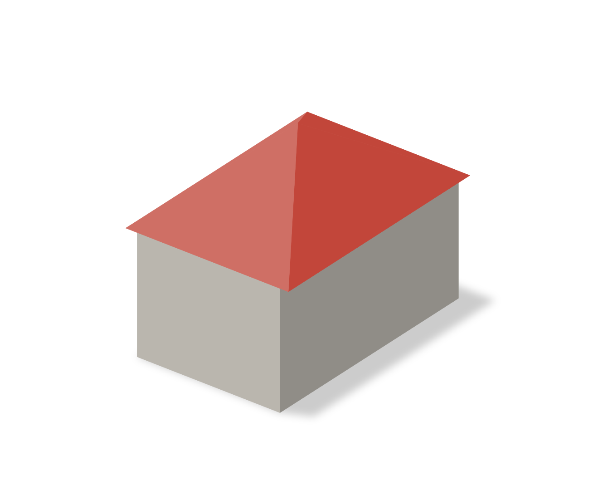
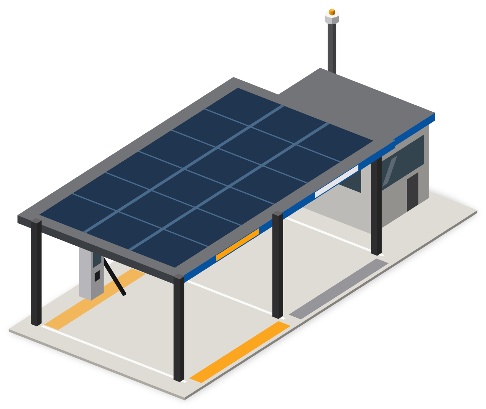
Side
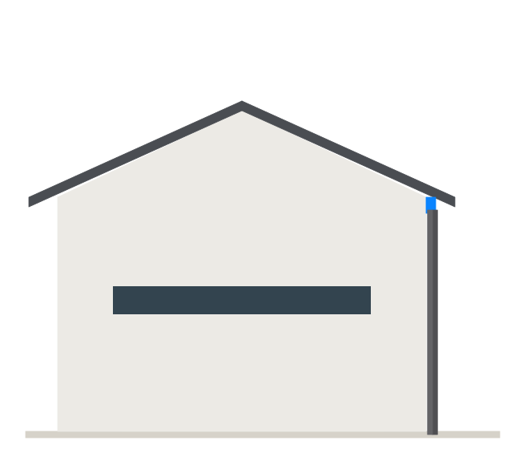
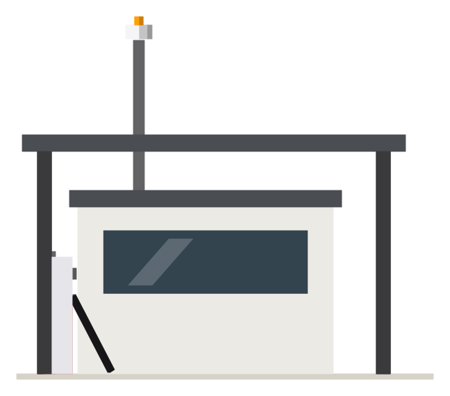
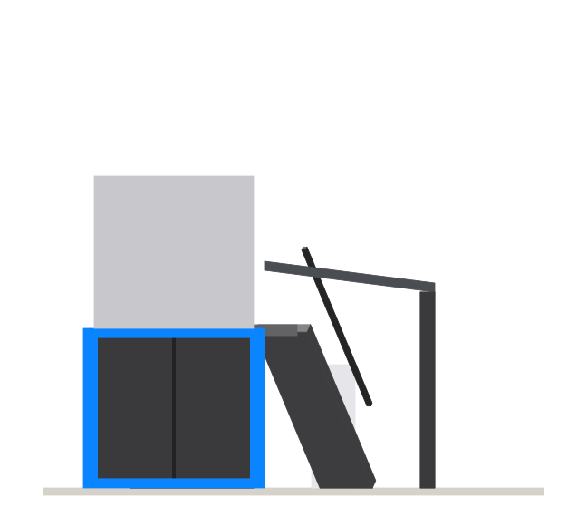
Top
At scene size, next to tractor A
Same pixels per unit as the tractor sheets above, tractor A at its scene scale (0.85) parked by the door.
Current · 24 trisA · 210 tris
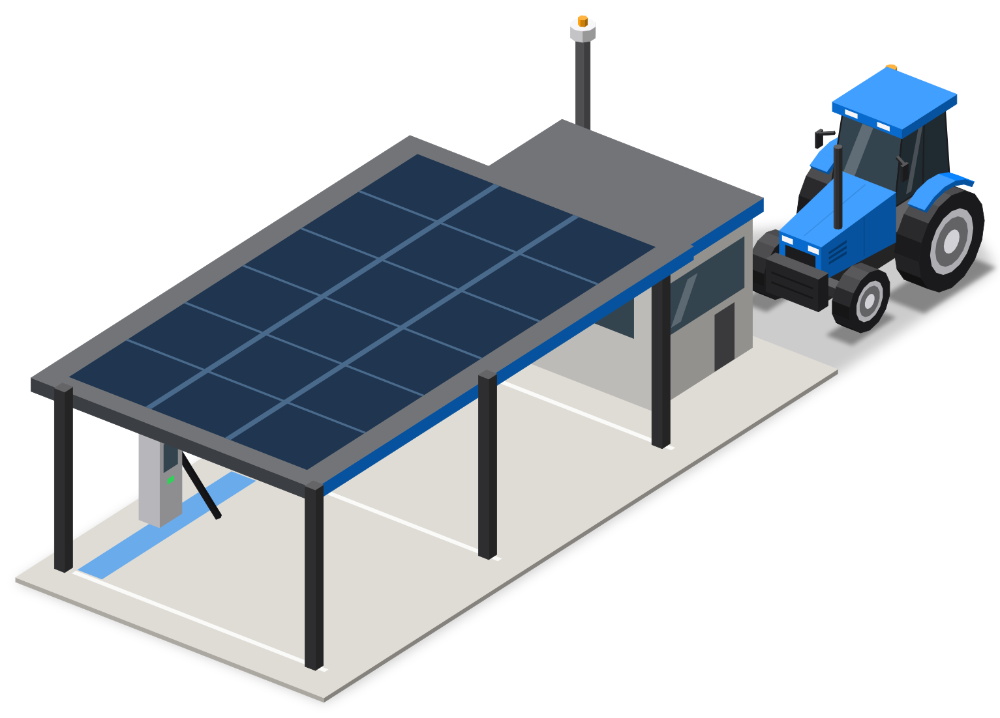
B · 284 trisC · 294 tris
Current · 24 trisA · 210 trisB · 284 trisC · 294 tris
Directions
A · Modern machine shed
What changes
Low gable shed with a standing-seam charcoal roof, a solar array on the south slope, a wide roll-up door and a man door, a clerestory strip on the side, and a small glass-fronted office with a flat roof. A thin fleet-blue fascia runs under the eave and around the office roof. Concrete apron in front.
Why
Reads instantly as “where the tractors live”: the roll-up door is the depot. The dark roof is the biggest shape from the tilted camera, so it anchors the corner without fighting the orchard greens or the fleet colours; solar adds the modern note. Matches tractor A’s diesel and mechanic story.
Three.js parts
Walls, office, apron, fascia: Box. Gable ends: one Box with the top edge collapsed to the ridge. Roof: two thin sloped Boxes. Seams, solar, door slats, glass: vertex-coloured quads. Downpipe: Cylinder 6.
Budget
9 parts and 116 triangles of solid geometry, plus 47 panel decals (94 triangles) for 210 triangles as drawn. Footprint 2.9 × 1.5, 1.1 tall.
B · Autonomous fleet hub
What changes
A solar canopy on six posts over two marked bays with charging pedestals (screen and green status light) and cables, plus a small glass-banded control building with a comms mast and amber lamp. Fleet-blue fascia on the canopy and the building, blue bay markings on the apron.
Why
Tells the autonomy story best and has the boldest top-down silhouette (one big solar rectangle). Trade-off: charging bays suggest electric tractors, which conflicts with tractor A’s exhaust, the fuel percentage and the breakdown smoke. The open canopy also hides the bays from the default camera.
17 parts and 236 triangles of solid geometry, plus 24 panel decals (48 triangles) for 284 triangles as drawn. Footprint 3.2 × 1.5, 1.3 tall.
C · Container yard
What changes
A fleet-colour shipping container as the workshop, an office container stacked on top with stairs and a landing, a lean-to shade roof on posts, and a fuel tank on saddles with a pump.
Why
Utilitarian and characterful, and the one where the fleet colour is largest. It is the busiest at scene size: the lean-to hides the stairs and the tank reads as a white blob below about 60 px.
Three.js parts
Containers, posts, saddles, pump, landing: Box. Stairs, rail: Box beams. Lean-to: sloped Box. Tank: Cylinder 12 with one end disc. Corrugation, doors, glass: vertex-coloured quads.
Budget
13 parts and 188 triangles of solid geometry, plus 41 panel decals (106 triangles) for 294 triangles as drawn. Footprint 2.9 × 1.4, 0.9 tall.
House
Parts
Solid
Panel decals
As drawn
W × D × H
Current shed
2
24
+0
24
1.6 × 1.1 × 1.3
A · Machine shed
9
116
+94
210
2.9 × 1.5 × 1.1
B · Fleet hub
17
236
+48
284
3.2 × 1.5 × 1.3
C · Container yard
13
188
+106
294
2.9 × 1.4 × 0.9
The house is static, so in three.js it bakes into one vertex-coloured geometry (one draw call, one shadow caster), with the fleet-blue fascia as a fixed vertex colour. All three directions stay under 300 triangles, about a third of one tractor.
Go with A, the modern machine shed. The roll-up door says “depot” at a glance, the dark solar roof anchors the corner from the tilted camera without competing with the fleet colours, and it fits tractor A’s diesel, fuel and mechanic story.
If the pitch leans into autonomy, borrow two details from B for A’s apron: the comms mast with its amber lamp and the painted bay lines. Both are cheap (about 40 triangles) and keep A’s silhouette.